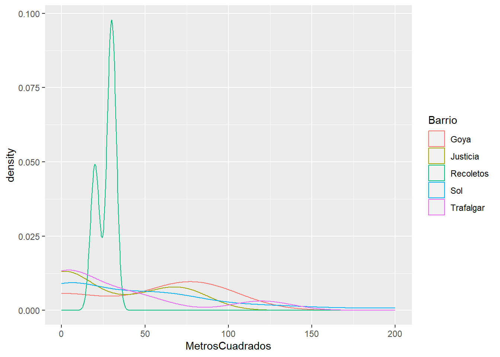

library(ggplot2)Cargar los datos en un dataframe llamado: airbnb
airbnb<-read.csv('data//airbnb.csv',sep = ',', stringsAsFactors = T)
head(airbnb) Zipcode Neighbourhood.Cleansed Property.Type Room.Type Accommodates
1 28004 Universidad Apartment Private room 2
2 28004 Universidad Apartment Entire home/apt 6
3 28004 Universidad Apartment Entire home/apt 3
4 28004 Universidad Loft Entire home/apt 3
5 28015 Universidad Apartment Entire home/apt 5
6 28004 Universidad Apartment Entire home/apt 2
Bathrooms Bedrooms Beds Bed.Type
1 2 1 1 Real Bed
2 1 3 5 Real Bed
3 1 2 2 Real Bed
4 2 1 1 Real Bed
5 1 1 1 Real Bed
6 1 0 1 Real Bed
Amenities
1 TV,Wireless Internet,Kitchen,Pets allowed,Pets live on this property,Buzzer/wireless intercom,Heating,Suitable for events,Washer,First aid kit,Essentials,Lock on bedroom door,Iron
2 TV,Internet,Wireless Internet,Air conditioning,Kitchen,Indoor fireplace,Heating,Family/kid friendly,Washer,Dryer,Smoke detector,Carbon monoxide detector,Essentials,Shampoo
3 TV,Internet,Wireless Internet,Air conditioning,Kitchen,Doorman,Heating,Family/kid friendly,Washer,Essentials,Shampoo,Hangers,Hair dryer,Iron,Laptop friendly workspace
4 TV,Internet,Wireless Internet,Air conditioning,Kitchen,Pets allowed,Breakfast,Elevator in building,Indoor fireplace,Buzzer/wireless intercom,Heating,Washer,Essentials,Shampoo,Hangers,Hair dryer,Iron,Laptop friendly workspace,translation missing: en.hosting_amenity_49,translation missing: en.hosting_amenity_50
5 TV,Wireless Internet,Air conditioning,Kitchen,Smoking allowed,Pets allowed,Elevator in building,Heating,Family/kid friendly,Washer,Essentials,Iron
6 TV,Cable TV,Internet,Wireless Internet,Air conditioning,Wheelchair accessible,Kitchen,Doorman,Elevator in building,Buzzer/wireless intercom,Heating,Washer,Smoke detector,Carbon monoxide detector,First aid kit,Safety card,Fire extinguisher,Essentials,Shampoo,24-hour check-in,Hangers,Hair dryer,Iron,Laptop friendly workspace,Self Check-In,Doorman Entry
Square.Feet Price Review.Scores.Rating
1 NA 35 NA
2 NA 92 96
3 NA 55 91
4 NA 60 100
5 538 75 90
6 NA 55 95Mostrar las primeras 6 filas del dataframe
head(airbnb, n = 6) Zipcode Neighbourhood.Cleansed Property.Type Room.Type Accommodates
1 28004 Universidad Apartment Private room 2
2 28004 Universidad Apartment Entire home/apt 6
3 28004 Universidad Apartment Entire home/apt 3
4 28004 Universidad Loft Entire home/apt 3
5 28015 Universidad Apartment Entire home/apt 5
6 28004 Universidad Apartment Entire home/apt 2
Bathrooms Bedrooms Beds Bed.Type
1 2 1 1 Real Bed
2 1 3 5 Real Bed
3 1 2 2 Real Bed
4 2 1 1 Real Bed
5 1 1 1 Real Bed
6 1 0 1 Real Bed
Amenities
1 TV,Wireless Internet,Kitchen,Pets allowed,Pets live on this property,Buzzer/wireless intercom,Heating,Suitable for events,Washer,First aid kit,Essentials,Lock on bedroom door,Iron
2 TV,Internet,Wireless Internet,Air conditioning,Kitchen,Indoor fireplace,Heating,Family/kid friendly,Washer,Dryer,Smoke detector,Carbon monoxide detector,Essentials,Shampoo
3 TV,Internet,Wireless Internet,Air conditioning,Kitchen,Doorman,Heating,Family/kid friendly,Washer,Essentials,Shampoo,Hangers,Hair dryer,Iron,Laptop friendly workspace
4 TV,Internet,Wireless Internet,Air conditioning,Kitchen,Pets allowed,Breakfast,Elevator in building,Indoor fireplace,Buzzer/wireless intercom,Heating,Washer,Essentials,Shampoo,Hangers,Hair dryer,Iron,Laptop friendly workspace,translation missing: en.hosting_amenity_49,translation missing: en.hosting_amenity_50
5 TV,Wireless Internet,Air conditioning,Kitchen,Smoking allowed,Pets allowed,Elevator in building,Heating,Family/kid friendly,Washer,Essentials,Iron
6 TV,Cable TV,Internet,Wireless Internet,Air conditioning,Wheelchair accessible,Kitchen,Doorman,Elevator in building,Buzzer/wireless intercom,Heating,Washer,Smoke detector,Carbon monoxide detector,First aid kit,Safety card,Fire extinguisher,Essentials,Shampoo,24-hour check-in,Hangers,Hair dryer,Iron,Laptop friendly workspace,Self Check-In,Doorman Entry
Square.Feet Price Review.Scores.Rating
1 NA 35 NA
2 NA 92 96
3 NA 55 91
4 NA 60 100
5 538 75 90
6 NA 55 95Renombrar las columnas de la siguiente forma:
| Nombre original | Nuevo nombre |
|---|---|
| Zipcode | CodigoPostal |
| Neighbourhood.Cleansed | Barrio |
| Property.Type | TipoPropiedad |
| Room.Type | TipoAlquiler |
| Accommodates | MaxOcupantes |
| Bathrooms | NumBanyos |
| Bedrooms | NumDormitorios |
| Beds | NumCamas |
| Bed.Type | TipoCama |
| Amenities | Comodidades |
| Square.Feet | PiesCuadrados |
| Price | Precio |
| Review.Scores.Rating | Puntuacion |
newnames<-c("CodigoPostal","Barrio","TipoPropiedad","TipoAlquiler","MaxOcupantes","NumBanyos",
"NumDormitorios","NumCamas","TipoCama","Comodidades","PiesCuadrados","Precio","Puntuacion")colnames(airbnb) <- newnames #nombre en espqanol de las columnas
head(airbnb) #comprobacion de las nuevos nombres de las columnas CodigoPostal Barrio TipoPropiedad TipoAlquiler MaxOcupantes NumBanyos
1 28004 Universidad Apartment Private room 2 2
2 28004 Universidad Apartment Entire home/apt 6 1
3 28004 Universidad Apartment Entire home/apt 3 1
4 28004 Universidad Loft Entire home/apt 3 2
5 28015 Universidad Apartment Entire home/apt 5 1
6 28004 Universidad Apartment Entire home/apt 2 1
NumDormitorios NumCamas TipoCama
1 1 1 Real Bed
2 3 5 Real Bed
3 2 2 Real Bed
4 1 1 Real Bed
5 1 1 Real Bed
6 0 1 Real Bed
Comodidades
1 TV,Wireless Internet,Kitchen,Pets allowed,Pets live on this property,Buzzer/wireless intercom,Heating,Suitable for events,Washer,First aid kit,Essentials,Lock on bedroom door,Iron
2 TV,Internet,Wireless Internet,Air conditioning,Kitchen,Indoor fireplace,Heating,Family/kid friendly,Washer,Dryer,Smoke detector,Carbon monoxide detector,Essentials,Shampoo
3 TV,Internet,Wireless Internet,Air conditioning,Kitchen,Doorman,Heating,Family/kid friendly,Washer,Essentials,Shampoo,Hangers,Hair dryer,Iron,Laptop friendly workspace
4 TV,Internet,Wireless Internet,Air conditioning,Kitchen,Pets allowed,Breakfast,Elevator in building,Indoor fireplace,Buzzer/wireless intercom,Heating,Washer,Essentials,Shampoo,Hangers,Hair dryer,Iron,Laptop friendly workspace,translation missing: en.hosting_amenity_49,translation missing: en.hosting_amenity_50
5 TV,Wireless Internet,Air conditioning,Kitchen,Smoking allowed,Pets allowed,Elevator in building,Heating,Family/kid friendly,Washer,Essentials,Iron
6 TV,Cable TV,Internet,Wireless Internet,Air conditioning,Wheelchair accessible,Kitchen,Doorman,Elevator in building,Buzzer/wireless intercom,Heating,Washer,Smoke detector,Carbon monoxide detector,First aid kit,Safety card,Fire extinguisher,Essentials,Shampoo,24-hour check-in,Hangers,Hair dryer,Iron,Laptop friendly workspace,Self Check-In,Doorman Entry
PiesCuadrados Precio Puntuacion
1 NA 35 NA
2 NA 92 96
3 NA 55 91
4 NA 60 100
5 538 75 90
6 NA 55 95colnames(airbnb) [1] "CodigoPostal" "Barrio" "TipoPropiedad" "TipoAlquiler"
[5] "MaxOcupantes" "NumBanyos" "NumDormitorios" "NumCamas"
[9] "TipoCama" "Comodidades" "PiesCuadrados" "Precio"
[13] "Puntuacion" Crea una nueva columna llamada MetrosCuadrados a partir de la columna PiesCuadrados.
# El dataset inicial es "airbnb" pero voy a hacer modificaciones iniciales asi que me copio en uno llamado "df"
df <- airbnb
# La nueva columna"MetrosCuadrados" se inicia con NA
df$MetrosCuadrados <- NA
# ver las columnas
colnames(df) [1] "CodigoPostal" "Barrio" "TipoPropiedad" "TipoAlquiler"
[5] "MaxOcupantes" "NumBanyos" "NumDormitorios" "NumCamas"
[9] "TipoCama" "Comodidades" "PiesCuadrados" "Precio"
[13] "Puntuacion" "MetrosCuadrados"head(df$PiesCuadrados, n = 5)[1] NA NA NA NA 538Ayuda: 1 pie cuadrado son 0,092903 metros cuadrdados
# cambiar la columna PiesCuadrados, usando la contante de la ayuda
df$MetrosCuadrados <- df$PiesCuadrados * 0.092903
# ver las columnas
colnames(df) [1] "CodigoPostal" "Barrio" "TipoPropiedad" "TipoAlquiler"
[5] "MaxOcupantes" "NumBanyos" "NumDormitorios" "NumCamas"
[9] "TipoCama" "Comodidades" "PiesCuadrados" "Precio"
[13] "Puntuacion" "MetrosCuadrados"head(df$MetrosCuadrados, n = 5) # tengo que tener NA y 538*0.092903 [1] NA NA NA NA 49.98181Miremos el código postal. Es una variable con entradas erroneas. Hay valores como ’‘,’-’ y ‘28’ que deberían ser considerados como NA. Así mismo también debería ser NA todos los que no compiencen por 28, ya que estamos con códigos postales de Madrid notebook1
El código postal 28002, 28004 y 28051 tienen entradas repetidas. Por ejemplo las entradas 28002 deberían ir detro de 28002
El codigo 2804 debería ser 28004, 2805 deberia ser 28005 y 2815 juncto con 2815 debería ser 28015
Limpia los datos de la columna Codigo Postal
# Reemplaza los valores vacíos, '-', y valores que no comienzan con '28' por NA
df$CodigoPostal[df$CodigoPostal == '' | df$CodigoPostal == '-' | !grepl("^28", df$CodigoPostal)] <- NA
# Corrige códigos postales específicos
#df$CodigoPostal <- gsub("^2804$", "28004", df$CodigoPostal)
#df$CodigoPostal <- gsub("^2805$", "28005", df$CodigoPostal)
#df$CodigoPostal <- gsub("^2815$", "28015", df$CodigoPostal)
# Dividir códigos postales con '\n' y mantener solo el primero
#df$CodigoPostal <- gsub("\n.*", "", df$CodigoPostal)
df$CodigoPostal[df$CodigoPostal=='28002\n28002']<-'28002'
df$CodigoPostal[df$CodigoPostal=='28051\n28051']<-'28051'
df$CodigoPostal[df$CodigoPostal=='Madrid 28004']<-'28004'
df$CodigoPostal[df$CodigoPostal=='2804']<-'28004'
df$CodigoPostal[df$CodigoPostal=='2805']<-'28005'
df$CodigoPostal[df$CodigoPostal=='2815']<-'28015'
df$CodigoPostal[df$CodigoPostal=='2015']<-'28015'
df$CodigoPostal <- gsub('[^(28)]\\d{3}', NA, df$CodigoPostal)
# Convierte la columna "CodigoPostal" en factor para representar las categorías limpias
df$CodigoPostal <- as.factor(df$CodigoPostal)
# Visualiza las primeras filas del dataframe para verificar los cambios
head(df) CodigoPostal Barrio TipoPropiedad TipoAlquiler MaxOcupantes NumBanyos
1 28004 Universidad Apartment Private room 2 2
2 28004 Universidad Apartment Entire home/apt 6 1
3 28004 Universidad Apartment Entire home/apt 3 1
4 28004 Universidad Loft Entire home/apt 3 2
5 28015 Universidad Apartment Entire home/apt 5 1
6 28004 Universidad Apartment Entire home/apt 2 1
NumDormitorios NumCamas TipoCama
1 1 1 Real Bed
2 3 5 Real Bed
3 2 2 Real Bed
4 1 1 Real Bed
5 1 1 Real Bed
6 0 1 Real Bed
Comodidades
1 TV,Wireless Internet,Kitchen,Pets allowed,Pets live on this property,Buzzer/wireless intercom,Heating,Suitable for events,Washer,First aid kit,Essentials,Lock on bedroom door,Iron
2 TV,Internet,Wireless Internet,Air conditioning,Kitchen,Indoor fireplace,Heating,Family/kid friendly,Washer,Dryer,Smoke detector,Carbon monoxide detector,Essentials,Shampoo
3 TV,Internet,Wireless Internet,Air conditioning,Kitchen,Doorman,Heating,Family/kid friendly,Washer,Essentials,Shampoo,Hangers,Hair dryer,Iron,Laptop friendly workspace
4 TV,Internet,Wireless Internet,Air conditioning,Kitchen,Pets allowed,Breakfast,Elevator in building,Indoor fireplace,Buzzer/wireless intercom,Heating,Washer,Essentials,Shampoo,Hangers,Hair dryer,Iron,Laptop friendly workspace,translation missing: en.hosting_amenity_49,translation missing: en.hosting_amenity_50
5 TV,Wireless Internet,Air conditioning,Kitchen,Smoking allowed,Pets allowed,Elevator in building,Heating,Family/kid friendly,Washer,Essentials,Iron
6 TV,Cable TV,Internet,Wireless Internet,Air conditioning,Wheelchair accessible,Kitchen,Doorman,Elevator in building,Buzzer/wireless intercom,Heating,Washer,Smoke detector,Carbon monoxide detector,First aid kit,Safety card,Fire extinguisher,Essentials,Shampoo,24-hour check-in,Hangers,Hair dryer,Iron,Laptop friendly workspace,Self Check-In,Doorman Entry
PiesCuadrados Precio Puntuacion MetrosCuadrados
1 NA 35 NA NA
2 NA 92 96 NA
3 NA 55 91 NA
4 NA 60 100 NA
5 538 75 90 49.98181
6 NA 55 95 NAUna vez limpios los datos ¿Cuales son los códigos postales que tenemos?
print(length(unique(df$CodigoPostal)))[1] 63¿Cuales son los 5 códigos postales con más entradas? ¿Y con menos? ¿Cuantas entradas tienen?
codigopostal_counts <- sort(table(df$CodigoPostal), decreasing = TRUE)
#¿Cuales son los 5 códigos postales con más entradas?
head(codigopostal_counts, n = 5)
28012 28004 28005 28013 28014
2060 1795 1195 1019 630 #¿Y con menos?
tail(codigopostal_counts, n = 5)
28058 28060 28094 28105 28850
1 1 1 1 1 ¿Cuales son los barrios que hay en el código postal 28012?
#filtro_cod_postal = df$CodigoPostal=="28012"
#print(sum(na.omit(filtro_cod_postal)))
filtro_cod_postal <- !is.na(df$CodigoPostal) & df$CodigoPostal == "28012"
#print((filtro_cod_postal))
#print(unique(df$Barrio))
barrios <- unique(df$Barrio[filtro_cod_postal])
print(barrios) [1] Sol Acacias Palos de Moguer Embajadores
[5] Cortes Palacio Universidad Delicias
[9] Arapiles Atocha Goya
125 Levels: Abrantes Acacias Adelfas Aeropuerto Aguilas ... Zofío¿Cuantas entradas hay en cada uno de esos barrios para el codigo postal 28012?
# Filtrar las entradas con código postal 28012
airbnb_28012 <- df[df$CodigoPostal == '28012', ]
# Convertir la columna "Barrio" en factor
airbnb_28012$Barrio <- factor(airbnb_28012$Barrio)
# Contar las entradas en cada barrio para el código postal 28012
barrios_count <- table(airbnb_28012$Barrio)
# Mostrar el resultado
barrios_count
Acacias Arapiles Atocha Cortes Delicias
13 1 1 216 1
Embajadores Goya Palacio Palos de Moguer Sol
1449 1 27 46 301
Universidad
4 ¿Cuantos barrios hay en todo el dataset airbnb? ¿Cuales son?
# total unicos
print(length(unique(df$Barrio)))[1] 125# barrios
#print(unique(df$Barrio))¿Cuales son los 5 barrios que tienen mayor número entradas?
Barrio_counts <- sort(table(df$Barrio), decreasing = TRUE)
#print(Barrio_counts)
#¿Cuales son los 5 códigos barrios con más entradas?
head(Barrio_counts, n = 5)
Embajadores Universidad Palacio Sol Justicia
1844 1358 1083 940 785 ¿Cuantos Tipos de Alquiler diferentes hay? ¿Cuales son? ¿Cuantas entradas en el dataframe hay por cada tipo?
alq_counts <- table(df$TipoAlquiler)
print(length(alq_counts))[1] 3print(alq_counts)
Entire home/apt Private room Shared room
7903 5113 191 Muestra el diagrama de cajas del precio para cada uno de los diferentes Tipos de Alquiler
library(ggplot2)
library(gridExtra)
# 3 variables con los datos de cada tipo
tipo_entire <- df[df$TipoAlquiler == "Entire home/apt",]
tipo_private <- df[df$TipoAlquiler == "Private room",]
tipo_compartido <- df[df$TipoAlquiler == "Shared room",]
#print(tipo_entire)
# Crear diagrama de cajas para cada tipo de alquiler
t_1 <-ggplot(tipo_entire, aes(y = Precio)) +
geom_boxplot() + ggtitle("Entire home/apt")
t_2 <-ggplot(tipo_private, aes(y = Precio)) +
geom_boxplot() +
ggtitle("Private room")
t_3 <-ggplot(tipo_compartido, aes(y = Precio)) +
geom_boxplot() +
ggtitle("Shared room")
grid.arrange(t_1, t_2,t_3, nrow = 1)Warning: Removed 7 rows containing non-finite values (`stat_boxplot()`).Warning: Removed 2 rows containing non-finite values (`stat_boxplot()`).Cual es el precio medio de alquiler de cada uno, la diferencia que hay ¿es estadísticamente significativa? ¿Con que test lo comprobarías?
# Crear una lista para almacenar los resultados de las pruebas de normalidad gausiana
normality_results <- list()
# Iterar a través de los grupos únicos en df$TipoAlquiler
for (tipo in levels(df$TipoAlquiler)) {
df1 <- subset(df, TipoAlquiler == tipo)
# Comprobar el tamaño de la muestra
sample_size <- nrow(df1)
if (sample_size >= 3 && sample_size <= 5000) {
# Comprobar la normalidad con el test de Shapiro-Wilk
shapiro_test <- shapiro.test(df1$Precio)
# Verificar la normalidad
if (shapiro_test$p.value >= 0.05) {
# Si la distribución es normal, almacenar el resultado en la lista de resultados de normalidad
normality_results[[tipo]] <- TRUE
} else {
# Si la distribución no es normal, almacenar el resultado en la lista de resultados de normalidad
normality_results[[tipo]] <- FALSE
}
} else {
print(paste("Grupo", tipo, "tiene un tamaño de muestra fuera del rango permitido. Se omite el análisis."))
}
}[1] "Grupo Entire home/apt tiene un tamaño de muestra fuera del rango permitido. Se omite el análisis."
[1] "Grupo Private room tiene un tamaño de muestra fuera del rango permitido. Se omite el análisis."# Iterar nuevamente a través de los grupos únicos en df$TipoAlquiler
for (tipo in levels(df$TipoAlquiler)) {
# Verificar si el grupo cumple con el tamaño de muestra y normalidad
if (!is.null(normality_results[[tipo]])) {
if (normality_results[[tipo]]) {
df1 <- subset(df, TipoAlquiler == tipo)
print(paste("Precio medio tipo", tipo, " = ", mean(df1$Precio, na.rm = TRUE)))
sp <- shapiro.test(df1$Precio)
print(paste(" - Test Shapiro p-valor = ", sp$p.value))
# Realizar un test ANOVA ya que la distribución es normal
anova_result <- anova(lm(Precio ~ TipoAlquiler, data = df1))
print(paste(" - Test ANOVA p-valor = ", anova_result$`Pr(>F)`[1]))
} else {
print(paste("Grupo", tipo, "no sigue una distribución gaussiana. Se omite el análisis."))
}
}
}[1] "Grupo Shared room no sigue una distribución gaussiana. Se omite el análisis."# Realizar un test de kruskal para comparar las medias
kt <- kruskal.test(Precio ~ TipoAlquiler, df)
# Imprimir el resultado del test de kruskal
cat("Las medias son estadísticamente diferentes ya que el p-valor es muy bajo. p-valor=", kt$p.value)Las medias son estadísticamente diferentes ya que el p-valor es muy bajo. p-valor= 0Filtra el dataframe cuyos tipo de alquiler sea ‘Entire home/apt’ y guardalo en un dataframe llamado airbnb_entire. Estas serán las entradas que tienen un alquiler del piso completo.
airbnb_entire <- subset(df, TipoAlquiler == "Entire home/apt")¿Cuales son los 5 barrios que tienen un mayor número de apartamentos enteros en alquiler? mas elementosNota: Mirar solo en airbnb_entire. A partir de este punto y hasta que se diga lo contrario partiremos de airbnb_entire.
# Usar la función table para contar las frecuencias de cada barrio
barrios_tab<- table(airbnb_entire$Barrio)
# Ordenar las frecuencias en orden descendente y seleccionar los primeros 5
head(sort(barrios_tab, decreasing = TRUE), 5)
Embajadores Universidad Palacio Sol Cortes
1228 984 769 701 574 ¿Cuales son los 5 barrios que tienen un mayor precio medio de alquiler para apartamentos enteros (es decir, del dataframe airbnb_entire)? ¿Cual es su precio medio?
Ayuda: Usa la función aggregate aggregate(.~colname,df,mean,na.rm=TRUE)
precio_por_barrio <- aggregate(. ~Barrio, airbnb_entire[,c("Precio","Barrio")], FUN =mean, na.rm=FALSE)
precio_por_barrio <- aggregate(Precio ~Barrio, airbnb_entire, FUN =mean, na.rm=FALSE)
#print(precio_por_barrio)
precio_por_barrio<-aggregate(. ~ Barrio, airbnb_entire[c("Barrio","Precio")], mean,na.rm=TRUE)
dim(precio_por_barrio)[1] 119 2precio_por_barrio<-precio_por_barrio[order(precio_por_barrio$Precio,decreasing = T),]
head(precio_por_barrio,5) Barrio Precio
77 Palomas 309.7500
50 Fuentelareina 180.0000
93 Recoletos 161.9254
43 El Plantío 150.0000
30 Castellana 141.3889barrios<-head(precio_por_barrio,5)$Barrio¿Cuantos apartamentos hay en cada uno de esos barrios? Mostrar una dataframe con el nombre del barrio, el precio y el número de entradas. dataframen nuevo
Ayuda: Podeis crear un nuevo dataframe con las columnas “Barrio” y “Freq” que contenga el número de entradas en cada barrio y hacer un merge con el dataframe del punto anterior.
# Contar el número de apartamentos en cada barrio
count_value <- as.data.frame(table(airbnb_entire$Barrio))
colnames(count_value) <- c("Barrio", "Freq")
# Combinar el número de apartamentos con el precio medio por barrio
mean_price <- merge(precio_por_barrio, count_value, by = "Barrio")
# Ordenar en orden descendente según el precio medio
mean_price <- mean_price[order(mean_price$Precio, decreasing = TRUE), ]
# Mostrar los 5 barrios con los precios medios más altos y su número de entradas
head(mean_price, 5) Barrio Precio Freq
77 Palomas 309.7500 4
50 Fuentelareina 180.0000 2
93 Recoletos 161.9254 135
43 El Plantío 150.0000 1
30 Castellana 141.3889 73Partiendo del dataframe anterior, muestra los 5 barrios con mayor precio, pero que tengan más de 100 entradas de alquiler.
# Filtrar los barrios con más de 100 entradas
barrios_filtrados <- mean_price[mean_price$Freq > 100, ]
# Mostrar los 5 barrios con los precios más altos entre los filtrados
head(barrios_filtrados, 5) Barrio Precio Freq
93 Recoletos 161.92537 135
52 Goya 111.33803 142
106 Sol 100.75036 701
108 Trafalgar 98.57848 223
59 Justicia 98.25468 534Dibuja el diagrama de densidad de distribución de los diferentes precios. Serían 5 gráficas, una por cada barrio. Clase 4 -> funciones R
ggplot geom -density(()
grup by barrio, son 5 graficas una encima de la otra
library(ggplot2)
# Identificar los 5 barrios con más de 100 entradas
barrios <- head(subset(mean_price, mean_price$Freq > 100), 5)$Barrio
# Filtrar el dataframe original para incluir solo los 5 barrios seleccionados
subset_df <- subset(airbnb_entire, Barrio %in% barrios)
# Crear un gráfico de densidad separado para cada barrio
ggplot(data = subset_df, aes(x = Precio, color = Barrio)) +
geom_density(bw = 5) +
labs(title = "Diagrama de Densidad de Precios por Barrio",
x = "Precio",
y = "Densidad")Warning: Removed 1 rows containing non-finite values (`stat_density()`).Calcula el tamaño medio, en metros cuadrados, para los 5 barrios anteriores y muestralo en el mismo dataframe junto con el precio y número de entradas
# Calcular el tamaño medio en metros cuadrados por barrio
mean_size <- aggregate(. ~ Barrio, data = airbnb_entire[c("Barrio","MetrosCuadrados")], FUN = mean, na.rm=T)
# Combinar los dataframes de tamaño medio, precio y número de entradas
result_df <- merge(subset(mean_price, mean_price$Freq > 100), mean_size, by = "Barrio")
result_df<-result_df[order(result_df$Precio,decreasing = T),]
head(result_df,5) Barrio Precio Freq MetrosCuadrados
8 Recoletos 161.92537 135 26.66316
4 Goya 111.33803 142 51.68504
9 Sol 100.75036 701 45.61692
10 Trafalgar 98.57848 223 29.30426
5 Justicia 98.25468 534 28.52669Dibuja el diagrama de densidad de distribución de los diferentes tamaños de apartamentos. Serían 5 gráficas, una por cada barrio. ggplot tamano medio ggplo gor densiry grup by barrio
datos_top5<-subset(airbnb_entire,Barrio %in% barrios)
# Crear las gráficas de densidad por barrio
ggplot(datos_top5, aes(x = MetrosCuadrados, color = Barrio)) +
geom_density(alpha = 0.5)# +Warning: Removed 1645 rows containing non-finite values (`stat_density()`).
Esta claro que las medias de metros cuadrados de cada uno de estos 5 barrios parecen ser diferentes, pero ¿son estadísticamente diferentes? ¿Que test habría que usar para comprobarlo? cuantos grupo, es gausiano, aov
#Selecciona los datos solo para los 5 barrios principales.
datos_top5<-subset(airbnb_entire,Barrio %in% barrios)
#para cada uno de estos 5 barrios, se calcula el precio medio de los metros cuadrados y se realiza una prueba de normalidad de Shapiro-Wilk para verificar si los datos siguen una distribución gaussiana.
for (barrio in unique(datos_top5$Barrio)){
df<-datos_top5[which(datos_top5$Barrio==as.character(barrio)),]
print(paste("Precio medio tipo",barrio," = ",mean(df$MetrosCuadrados,na.rm=T)))
if (nrow(df)>5000){
df<-df[1:5000,]
}
sp<-shapiro.test(df$MetrosCuadrados)
print(paste(" - Test shapiro pvalor = ",sp$p.value))
}[1] "Precio medio tipo Sol = 45.6169213833333"
[1] " - Test shapiro pvalor = 8.6913775134728e-07"
[1] "Precio medio tipo Justicia = 28.5266858823529"
[1] " - Test shapiro pvalor = 0.00064192630271212"
[1] "Precio medio tipo Recoletos = 26.663161"
[1] " - Test shapiro pvalor = 0"
[1] "Precio medio tipo Goya = 51.6850356666667"
[1] " - Test shapiro pvalor = 0.519924091564745"
[1] "Precio medio tipo Trafalgar = 29.3042605714286"
[1] " - Test shapiro pvalor = 0.0127581397426826"#los datos no siguen una distribución gaussiana, para determinar si hay diferencias estadísticamente significativas entre los barrios en términos del tamaño de los apartamentos
kt<-kruskal.test(MetrosCuadrados~Barrio,datos_top5)
#no hay evidencia suficiente para determinar que los tamaños de los apartamentos son diferentes en estos barrios
kt
Kruskal-Wallis rank sum test
data: MetrosCuadrados by Barrio
Kruskal-Wallis chi-squared = 1.882, df = 4, p-value = 0.7574paste("El pvalor del test es ",kt$p.value)[1] "El pvalor del test es 0.757443581555649"# la variabilidad observada en los tamaños de los apartamentos podría deberse al azar y no a diferencias reales entre los barrios.Para únicamente los pisos de alquiler en el barrio de Sol:
barrio_sol<-subset(airbnb_entire,Barrio=="Sol")
Calcular un modelo lineal que combine alguna de estas variables: * NumBanyos * NumDormitorios * MaxOcupantes * MetrosCuadrados.
Primero calculamos la correlación para ver como se relacionan estas variables entre sí. corr
Se observa que la correlación entre el número de dormitorios y los metros cuadrados es sorprendentemente baja. ¿Son de fiar esos números?
Mediante un histograma o curvas de densidad podemos descartar números que notienen sentido en el dataframe barrio_sol, para tener una matriz de correlación que tenga mayor sentido.
# Filtrar el dataframe para el barrio de Sol
barrio_sol <- subset(airbnb_entire, Barrio == "Sol")
# Seleccionar las variables de interés
variables <- c("NumBanyos", "NumDormitorios", "MaxOcupantes", "MetrosCuadrados")
# Calcular la matriz de correlación
corr <- cor(barrio_sol[variables],use="pairwise.complete.obs")
# Imprimir la matriz de correlación
print(corr) NumBanyos NumDormitorios MaxOcupantes MetrosCuadrados
NumBanyos 1.0000000 0.6761906 0.6578162 0.4820549
NumDormitorios 0.6761906 1.0000000 0.7594598 0.5684521
MaxOcupantes 0.6578162 0.7594598 1.0000000 0.4286233
MetrosCuadrados 0.4820549 0.5684521 0.4286233 1.0000000# Explorar los datos con histogramas
par(mfrow = c(2, 2)) # Crear un diseño de subgráficos 2x2
for (variable in variables) {
hist(barrio_sol[[variable]], main = paste("Histograma de", variable), xlab = variable)
}# Restablecer el diseño de los gráficos
par(mfrow = c(1, 1))#Mirando el histograma de metros cuadrados empiezan desde 0 metros cuadrado, tal vez no se deberian tener en cuenta esos datos
barrio_sol<-subset(barrio_sol, MetrosCuadrados>30)
# Calcular la matriz de correlación
corr <- cor(barrio_sol[variables],use="pairwise.complete.obs")
print(corr) #con el valor alto de 0.81 parece una mejor relacion NumBanyos NumDormitorios MaxOcupantes MetrosCuadrados
NumBanyos 1.0000000 0.7219697 0.8636095 0.5993495
NumDormitorios 0.7219697 1.0000000 0.7874931 0.8320954
MaxOcupantes 0.8636095 0.7874931 1.0000000 0.6755066
MetrosCuadrados 0.5993495 0.8320954 0.6755066 1.0000000Una vez que hayamos filtrado los datos correspondientes calcular el valor o la combinación de valores que mejor nos permite obtener el precio de un inmueble.
# Crear un modelo de regresión lineal
modelo <- lm(barrio_sol,formula=Precio~MetrosCuadrados)
# Resumen del modelo
print(summary(modelo))
Call:
lm(formula = Precio ~ MetrosCuadrados, data = barrio_sol)
Residuals:
Min 1Q Median 3Q Max
-65.547 -23.537 -0.514 10.746 121.394
Coefficients:
Estimate Std. Error t value Pr(>|t|)
(Intercept) 28.4792 14.8893 1.913 0.0654 .
MetrosCuadrados 1.0006 0.1581 6.330 5.56e-07 ***
---
Signif. codes: 0 '***' 0.001 '**' 0.01 '*' 0.05 '.' 0.1 ' ' 1
Residual standard error: 40.44 on 30 degrees of freedom
Multiple R-squared: 0.5719, Adjusted R-squared: 0.5576
F-statistic: 40.07 on 1 and 30 DF, p-value: 5.561e-07# Crear un modelo de regresión lineal
modelo <- lm(barrio_sol,formula=Precio~NumBanyos)
# Resumen del modelo
print(summary(modelo))
Call:
lm(formula = Precio ~ NumBanyos, data = barrio_sol)
Residuals:
Min 1Q Median 3Q Max
-94.133 -20.953 -8.703 11.797 159.332
Coefficients:
Estimate Std. Error t value Pr(>|t|)
(Intercept) 35.74 17.89 1.997 0.0549 .
NumBanyos 52.47 11.04 4.751 4.7e-05 ***
---
Signif. codes: 0 '***' 0.001 '**' 0.01 '*' 0.05 '.' 0.1 ' ' 1
Residual standard error: 46.69 on 30 degrees of freedom
Multiple R-squared: 0.4294, Adjusted R-squared: 0.4103
F-statistic: 22.57 on 1 and 30 DF, p-value: 4.702e-05# Crear un modelo de regresión lineal
modelo <- lm(barrio_sol,formula=Precio~NumDormitorios )
# Resumen del modelo
print(summary(modelo))
Call:
lm(formula = Precio ~ NumDormitorios, data = barrio_sol)
Residuals:
Min 1Q Median 3Q Max
-89.028 -14.615 -3.865 19.219 61.972
Coefficients:
Estimate Std. Error t value Pr(>|t|)
(Intercept) 44.700 9.168 4.876 3.31e-05 ***
NumDormitorios 38.666 4.220 9.162 3.37e-10 ***
---
Signif. codes: 0 '***' 0.001 '**' 0.01 '*' 0.05 '.' 0.1 ' ' 1
Residual standard error: 31.71 on 30 degrees of freedom
Multiple R-squared: 0.7367, Adjusted R-squared: 0.7279
F-statistic: 83.94 on 1 and 30 DF, p-value: 3.374e-10# Crear un modelo de regresión lineal
modelo <- lm(barrio_sol,formula=Precio~MaxOcupantes )
# Resumen del modelo
print(summary(modelo))
Call:
lm(formula = Precio ~ MaxOcupantes, data = barrio_sol)
Residuals:
Min 1Q Median 3Q Max
-86.900 -18.666 -5.003 14.991 115.100
Coefficients:
Estimate Std. Error t value Pr(>|t|)
(Intercept) 23.270 17.333 1.342 0.19
MaxOcupantes 16.163 2.864 5.643 3.79e-06 ***
---
Signif. codes: 0 '***' 0.001 '**' 0.01 '*' 0.05 '.' 0.1 ' ' 1
Residual standard error: 43.05 on 30 degrees of freedom
Multiple R-squared: 0.5149, Adjusted R-squared: 0.4988
F-statistic: 31.85 on 1 and 30 DF, p-value: 3.794e-06# Crear un modelo de regresión lineal múltiple
modelo <- lm(barrio_sol,formula=Precio~MetrosCuadrados+NumBanyos)
# Resumen del modelo
print(summary(modelo))
Call:
lm(formula = Precio ~ MetrosCuadrados + NumBanyos, data = barrio_sol)
Residuals:
Min 1Q Median 3Q Max
-79.671 -10.463 2.130 8.989 124.049
Coefficients:
Estimate Std. Error t value Pr(>|t|)
(Intercept) 12.8512 15.6018 0.824 0.416833
MetrosCuadrados 0.7506 0.1853 4.051 0.000349 ***
NumBanyos 25.2424 11.2131 2.251 0.032125 *
---
Signif. codes: 0 '***' 0.001 '**' 0.01 '*' 0.05 '.' 0.1 ' ' 1
Residual standard error: 37.95 on 29 degrees of freedom
Multiple R-squared: 0.6356, Adjusted R-squared: 0.6104
F-statistic: 25.29 on 2 and 29 DF, p-value: 4.403e-07# Crear un modelo de regresión lineal múltiple
modelo <- lm(barrio_sol,formula=Precio~MetrosCuadrados+NumDormitorios)
# Resumen del modelo
print(summary(modelo))
Call:
lm(formula = Precio ~ MetrosCuadrados + NumDormitorios, data = barrio_sol)
Residuals:
Min 1Q Median 3Q Max
-87.11 -17.24 -2.55 20.46 66.59
Coefficients:
Estimate Std. Error t value Pr(>|t|)
(Intercept) 38.5659 11.9692 3.222 0.00314 **
MetrosCuadrados 0.1807 0.2248 0.804 0.42799
NumDormitorios 33.5454 7.6545 4.382 0.00014 ***
---
Signif. codes: 0 '***' 0.001 '**' 0.01 '*' 0.05 '.' 0.1 ' ' 1
Residual standard error: 31.9 on 29 degrees of freedom
Multiple R-squared: 0.7424, Adjusted R-squared: 0.7247
F-statistic: 41.8 on 2 and 29 DF, p-value: 2.869e-09# Crear un modelo de regresión lineal múltiple
modelo <- lm(barrio_sol,formula=Precio~MetrosCuadrados+NumBanyos+NumDormitorios)
# Resumen del modelo
print(summary(modelo))
Call:
lm(formula = Precio ~ MetrosCuadrados + NumBanyos + NumDormitorios,
data = barrio_sol)
Residuals:
Min 1Q Median 3Q Max
-82.501 -14.173 -3.726 20.732 71.209
Coefficients:
Estimate Std. Error t value Pr(>|t|)
(Intercept) 34.1280 14.6265 2.333 0.02704 *
MetrosCuadrados 0.1812 0.2276 0.796 0.43271
NumBanyos 5.9818 11.0408 0.542 0.59225
NumDormitorios 31.1029 8.9654 3.469 0.00171 **
---
Signif. codes: 0 '***' 0.001 '**' 0.01 '*' 0.05 '.' 0.1 ' ' 1
Residual standard error: 32.3 on 28 degrees of freedom
Multiple R-squared: 0.7451, Adjusted R-squared: 0.7178
F-statistic: 27.28 on 3 and 28 DF, p-value: 1.848e-08# Crear un modelo de regresión lineal múltiple
modelo <- lm(barrio_sol,formula=Precio~NumBanyos+NumDormitorios+MetrosCuadrados+MaxOcupantes)
# Resumen del modelo
print(summary(modelo))
Call:
lm(formula = Precio ~ NumBanyos + NumDormitorios + MetrosCuadrados +
MaxOcupantes, data = barrio_sol)
Residuals:
Min 1Q Median 3Q Max
-78.882 -15.956 -2.229 20.098 68.919
Coefficients:
Estimate Std. Error t value Pr(>|t|)
(Intercept) 32.2483 15.6064 2.066 0.04851 *
NumBanyos 1.7501 15.5585 0.112 0.91127
NumDormitorios 30.0010 9.5275 3.149 0.00398 **
MetrosCuadrados 0.1734 0.2320 0.748 0.46122
MaxOcupantes 1.9309 4.9223 0.392 0.69793
---
Signif. codes: 0 '***' 0.001 '**' 0.01 '*' 0.05 '.' 0.1 ' ' 1
Residual standard error: 32.8 on 27 degrees of freedom
Multiple R-squared: 0.7466, Adjusted R-squared: 0.709
F-statistic: 19.88 on 4 and 27 DF, p-value: 9.928e-08¿Que variable es más fiable para conocer el precio de un inmueble, el número de habitaciones o los metros cuadrados? pvalor mas estrellitas p valor bajo
# parece que el número de dormitorios (NumDormitorios) es más confiable para predecir el precio de un inmueble en el barrio de Sol, ya que es un predictor significativo en todos los modelos y tiene un mayor impacto en el precio en comparación con los metros cuadrados.Responde con su correspondiente margen de error del 95%, ¿cuantos euros incrementa el precio del alquiler por cada metro cuadrado extra del piso? precio en funcion de metros cuadrado -> confint(lm(precio-metro2,df))
# Ajustar el modelo de regresión lineal simple
modelo <- lm(barrio_sol, formula=Precio ~ MetrosCuadrados)
# Calcular el intervalo de confianza del 95% para el coeficiente de MetrosCuadrados
intervalo_confianza <- confint(modelo)
# Mostrar el intervalo de confianza
intervalo_confianza 2.5 % 97.5 %
(Intercept) -1.9286895 58.887121
MetrosCuadrados 0.6777739 1.323401#los metros cuadrados tienen un efecto significativo en el precio del alquiler en el conjunto de datos y se espera un aumento significativo en el precio por cada metro cuadrado adicional del pisoResponde con su correspondiente margen de error del 95%, ¿cuantos euros incrementa el precio del alquiler por cada habitación?
confint(lm(precio-habitacion,df))
# Ajustar el modelo de regresión lineal simple
modelo <- lm(barrio_sol, formula=Precio ~ NumDormitorios)
# Calcular el intervalo de confianza del 95% para el coeficiente de NumDormitorios
intervalo_confianza <- confint(modelo)
# Mostrar el intervalo de confianza
intervalo_confianza 2.5 % 97.5 %
(Intercept) 25.97660 63.4224
NumDormitorios 30.04669 47.2848#el número de dormitorios tiene un efecto significativo en el precio del alquiler en el conjunto de datos y se espera un aumento significativo en el precio por cada dormitorio adicional en el piso¿Cual es la probabilidad de encontrar, en el barrio de Sol, un apartamento en alquiler con 3 dormitorios? ¿Cual es el intervalo de confianza de esa probabilidad?
# Calcular la probabilidad directamente
probabilidad <- sum(barrio_sol$NumDormitorios == 3) / nrow(barrio_sol)
# Calcular el intervalo de confianza usando binom.test
intervalo_confianza <- binom.test(sum(barrio_sol$NumDormitorios == 3), nrow(barrio_sol))$conf.int
# Mostrar la probabilidad y el intervalo de confianza
print(paste("La probabilidad es:", probabilidad))[1] "La probabilidad es: 0.09375"print("El margen de confianza es:")[1] "El margen de confianza es:"print(intervalo_confianza)[1] 0.01976718 0.25022695
attr(,"conf.level")
[1] 0.95#la probabilidad de encontrar un apartamento en alquiler con 3 dormitorios en el barrio de Sol es del 10.71%.
#la confianza del 95%, podemos encontrar un apartamento con 3 dormitorios en el barrio de Sol dentro de este intervalo(2.27%) hasta (28.23%).